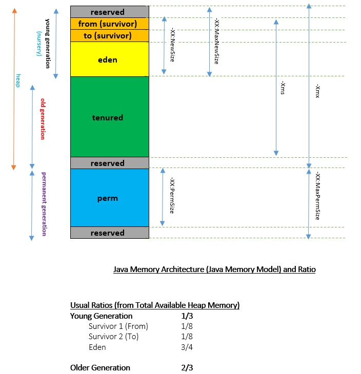

主要简单的了解JVM的内存区(Memory Area)以及GC(Garbage Collection)垃圾回收机制。
一、内存结构
Java虚拟机定义了许多的运行时数据区(run-time data areas), 供程序执行时使用。
其中，一些数据区域随着JVM的创建而创建，只有在JVM退出时在销毁，即属于JVM。
而其他的数据区随着进程(Thread)的创建而创建，进程销毁时也随之销毁(每个线程独有)。
1. 逻辑分区
JVM 内存在应用逻辑上可以分为以下区域:
1.1.pc Register - 程序计数器
存放当前执行语句(JVM instruction)的物理地址，随线程创建而创建。(每个线程均需要一个程序计数器)
1.2.JVM Stacks - 虚拟机栈
每个java虚拟机线程都有个私有的java虚拟机栈，与线程同创建。Java虚拟机栈存储帧(Frame), Java虚拟机栈类似于C语言中的栈：它用于保存局部变量(Thread-local variables), 并在方法的调用和返回中发挥作用。
- java虚拟机栈的内存分配不需要是连续的。
- 栈的大小可以是固定或动态扩展/收缩的，JVM允许我们对栈的初始大小进行控制，在动态扩展情况下，可以指定栈允许的最大和最小分配空间(通过
-Xss和-Xsx来配置)。
Notice:
- 当线程中的计算需求超出Java虚拟机允许的范围时(线程请求的栈深度超过JVM运行深度), 会抛出
StackOverflowError; - 在允许动态扩展栈的大小的情况下，当无法满足一次扩展需求或剩余的内存不足以为一个新线程创建栈时， JVM会抛出
OutOfMemoryError。
1.3.Heap - 堆
堆作为运行时数据区，为所有的类实例和数组分配内存，属于所有Java线程共享的。堆在JVM启动时创建，对象的堆存储由自动存储管理系统(GC)来回收, 对象永远不会被显式的释放。
- 和线程栈一样，堆的大小是可以固定或动态扩展的，堆的内存不需要是连续的;
- 堆的大小动态调整范围指定通过
-Xms和-Xmx来指定;
Notice:
- 当堆无法申请到内存时(即GC无法申请到内存时), JVM会抛出
OutOfMemoryError。
1.4.Method Area - 方法区
和堆一样，方法区同样是所有线程共享的(随着JVM的启动而创建)。方法区存放每个类的类结构，如运行常量池(run-time constant pool)、字段(field)、构造方法和方法代码(包括类实例化方法)。
- 虽然方法区在逻辑上是堆的一部分，但是垃圾收集器不会对它进行收集，Java SE8版本的规范没有对方法区的位置和对方法区中已编译代码的管理策略提出强制要求;
- 方法区同样是可以是固定大小或动态扩展的，内存也不需要是连续的;
Notice:
- 当方法区的内存无法满足内存申请需求时，JVM会抛出
OutOfMemoryError。
1.5.Run-time Constant Pool - 运行时常量池
通过之前对类文件.class格式的了解，我们知道每个类文件中都是有一个constant_pool[constant_count]的表(Table)的, 存放字符串常量，类和接口名称，字段名称以及类文件结构及其结构中引用的其他常量。
它包含几种常量，从编译时已知的数字字面量(numeric literals)到必须在运行时解析的方法和字段引用。
每个运行时常量池都是在上文提到的方法区中创建的，当当JVM创建类或接口时，将创建类或接口的运行常量池(其实，通过我们已经了解到的类加载机制，知道当类加载时是将类文件以二进制数据的形式加载到方法区中，运行时常量池的创建在类加载过程中完成)。
创建类或接口时，如果创建运行时常量池所需的内存大于方法区中的可用内存，则JVM将抛出OutOfMemoryError。
1.6. Native Method Stacks - 本地方法栈
JVM实现的传统栈(conventional stack), 也称为”C栈”, 用于支持Java编程语言以外的语言编写的方法。
本地方法栈也可以供诸如C语言的Java虚拟机指令集解释器的实现来使用。对于无法加载本地方法且本身不依赖于传统栈的Java虚拟机实现来说，并不需要提供本地方法栈。
如果JVM实现提供了本地方法栈，和线程栈一样，通常也是在创建每个线程时为每个线程分配一个本地方法栈。
- 本地方法栈可以是固定大小或动态扩展的，当是固定大小时，可以在创建栈时独立选择每个本地方法栈的大小;
Notice: (和线程栈类似)
- 当线程中的计算需求超出Java虚拟机允许的范围时(线程请求的本地方法栈深度超过JVM运行深度), 会抛出
StackOverflowError; - 在允许动态扩展栈的大小的情况下，当无法满足一次扩展需求或剩余的内存不足以为一个新线程创建本地方法栈时， JVM会抛出
OutOfMemoryError。
此部分内容主要参考 JAVA SE 8 Java Virtual Machine Specification
2. 内存模型
JVM内存由以下的部分组成:
- 堆内存(Heap Memory): 存放Java对象;
- 非堆内存(Non-Heap Memory): 用于java程序存储加载的类和其他元数据;
- JVM本身代码，JVM内部结构，加载的探查器(Loaded profiler agent)代码和数据等。

2.1 堆内存
堆内存是运行时数据区，从中分配所有Java类实例和数组的内存，堆在JVM启动时创建，堆的大小可以是固定的或动态扩展的，堆的大小可以由以下的vm参数来指定:
-Xms<size>: 设置堆的初始大小;-Xmx<size>: 设置堆的最大内存大小.
默认情况下，最大堆的大小设置为64Mb。
JVM 堆内存在物理上分为两个部分: 新生代(nursery or young generation)和老年代(old space or old generation)。
新生代是为分配新对象而保留的堆的部分空间。当新生代占满时，通过Minor GC对新生代区域执行垃圾回收动作，其中在新生代中生存足够长时间的所有对象(经历过若干次Minor GC后保留下来的对象)将被迁移到老年代, 从而释放新生代的空间以为更多的对象分配空间。

Minor GC分为三个部分: 伊甸园(Eden)区、和两个幸存区(Survivor) S0(from), S1(to)
关于新生代内存空间(Young Generation/Nursery):
- 大多数对象的创建都是位于Eden区的(因为有可能一些比较大的对象是直接在老年代中创建);
- 当Eden区填满对象时，执行Minor GC并将所有幸存对象移到其中一个幸存区空间;
- Minor GC还会检查幸存区中的对象，并将幸存的对象移动到另一个幸存区，即幸存区总有一个是空的(即GC算法中的
mark-and-copy算法); - 在多次Minor GC中存活下来的对象会被移动到老年代中。至于经过多少次Minor GC能晋升到老年代由JVM决定，控制对象的“年龄阈值(这里的年龄指对象被移动的次数)”.
Java 最近的版本中的新生代中还包含一个保留区(reserved)， 用于保存最近创建的对象，防止对象在Minor GC执行之前被提升。
关于老年代内存空间(Old Generation - Tenured)
当老年区填满时，老年区同样会执行垃圾收集，称为Major GC，老年代中包含那些从多次Minor GC中幸存的对象，通常执行一次Major GC 时间要比较长，因为Minor GC旨在快速找到在新生代中依然存活的对象并将它们移动，所以Minor GC执行的频率和速度都要Major GC的更大。
根据阈值限制，可以使用-XX:+PrintTenuringDistribution来检查，它按年龄来显示对象，将对象从Survivor空间移到Tenured空间中。
我们还有许多其他有用的参数设置，如-XX:InitialTenuringThreshold, -XX:MaxTenuringThreshold和-XX:TargetSurvivorRatio, 可以用它们来最大限度的利用tenured和survivor空间。
通过设置-XX:InitialTenuringThreshold和-XX:MaxTenuringThreshold来设置对象的“年龄”的初始值和允许的最大值。

2.2 非堆内存
JVM堆以外内存，包含JVM缓存空间，类结构如运行常量池、字段和方法数据，方法构造方法。
2.2.1.元空间(Metaspace)
在Java8及以上版本已经没有了Permanent Generation 永久代这块区域，将不会再有关于java.lang.OutOfMemoryError: PermGen内存问题的存在。与驻留在Java堆中的Perm Gen不同，Metaspace 已经不是堆的一部分了。
类元数据多数情况下都是从本地内存中分配的。默认情况下，Metaspace会自动增加其大小(直接由底层操作系统提供支持), 而Perm Gen始终是有固定的上限的。我们可以是这两个vm参数来指定Metaspace 的大小: -XX:MetaSpaceSize和-XX:MaxMetaspaceSize。
Metaspace背后的含义是类的生命周期机器元数据，这与类加载器的生命周期相匹配。也就是说只要类加载器处于活动中，元数据就会在Metaspace中保持活动状态且无法释放。
2.2.2.代码缓存(Code Cache)
运行Java程序时，它以分层的方式执行代码。在第一层，使用客户机编译器(C1 compiler)来编译代码。分析数据(profiling data)在服务器编译器的第二层中(C2 compiler)使用，以优化的方式编译该代码。默认情况下，Java7未启用分层编译，但在Java8中启用了分层编译。
即时编译器(JIT compiler)将编译的代码存储在称为代码缓存的区域中，它是一个用于保存已编译代码的特殊堆。如果该区域的大小超过阈值，则该区域将被刷新，且GC不会重新定位这些对象。
Java8中已经解决了一些性能问题和编译器未重新启用的问题，而在Java7中避免这些问题的方案之一是将代码缓存区域的大小增加到一个永远不会达到的程度。
2.2.3.方法区(Method Area)
方法区是Perm Gen 空间的一部分，用于存储类结构(运行时常量池和静态变量)以及方法和构造方法的代码。
2.2.4.内存池(Memory Pool)
内存池由JVM内存管理器创建，用于创建不可变对象池。内存池可以属于Heap或Perm Gen， 具体取决于JVM内存管理器的实现。
2.2.5.运行时常量池(Run-time Constant Pool)
运行时常量池，即每个类中的constant_pool表， 它包含类运行时常量和静态方法。运行时常量池是方法区的一部分。
2.2.6.Java栈 (Java Stack)
Java栈内存用于线程的执行。它们包含暂时的方法的特定值(Thread-local variables, 线程局部变量), 以及对从该方法引用的堆中其他对象的引用。
2.3 Java 堆配置选项
Java提供了很多关于堆内存的配置选项，我们可以使用它们来设置内存大小及其比例。下面是一些常用的配置项:
| VM Switch | VM Switch Description |
|---|---|
-Xms | 用于在JVM启动时设置初始堆大小 |
-Xmx | 用于设置最大堆大小 |
-Xmn | 设置新生代区域的大小，剩下的空间用于老年代 |
-XX:PermGen | 用于设置永久代 Perm Gen 的初始大小 |
-XX:MaxPermGen | 用于设置Perm Gen的最大内存空间 |
-XX:SurvivorRatio | 设置Eden区的比例(Eden/Survivor)，如新生代大小为10M, -XX:SurvivorRatio=2, 则Eden空间将预留5M, Survivor各预留2.5M。默认值是8 |
-XX:NewRatio | 设置老年代Tenured/新生代young Gen的比例，默认是2 |
参考链接:
二、垃圾回收
1. 垃圾回收机制
1.1 流程
垃圾回收一个释放堆内空间以创建新对象的过程。Java的最佳特性之一就是垃圾自动收集，垃圾收集器是JVM管理的进程，它可以查看内存中的所有对象，并找出程序中任何部分都没有引用的对象，删除并回收空间以分配给其他新创建的对象。通过垃圾收集有以下步骤:
- Marking 标记: 标记哪些对象是可达对象(live objects)，哪些是不可达对象(dead objects), 垃圾收集器会以一个GC root开始遍历对象图(Object Graph)， 此过程会引起”Stop the World Pause”(将当前所有运行的线程挂起，直到对象图遍历完毕);

- Normal Deletion 普通删除: 删除不可达对象并回收分配给其他对象的空闲空间;
- Deletion with compacting: 性能考虑，在删除不可达对象之后，会将所有幸存对象移动到一起，腾出整段空闲的空间(内存碎片处理);

- Copy 复制: 将堆内存分成两个相等大小的分区，每次只使用一个区域，当完成标记后，直接将幸存对象复制到另一个分区即可。(例如Young Gen 中两个Survivor区)

上面给出步骤涉及的内容其实就是Java垃圾收集中使用的算法。
自JDK 1发布以来，Java垃圾收集从未使用过引用计数算法 References Counting, 因为会出现”循环引用“，即对象A引用对象B, 而对象B引用对象A， 使得它们永远无法被垃圾收集器回收。
关于Stop the World Pause:
所有的垃圾收集都会引起”Stop the World Pause”，即应用中的所有线程都要被挂起，直到对象图遍历完成。(因为如果对象图发生变化的话，对象图将无法正确的遍历)。
对于新生代而言，由于存放的是短期对象，所以Minor GC过程非常快，应用程序可以说几乎不受它引起的”Stop the World Pause”的影响。
但是，Major GC 就需要很长时间了，它会检查所有的活动对象。我们应该尽量让Major GC最少执行，因为它会使应用程序持续很长时间没有响应。
1.2 策略
虚拟机栈、本地方法栈和程序计数器在编译完毕后已经可以确定所需内存空间，程序执行完毕后也会自动释放所有内存空间，所以不需要进行动态回收优化。JVM内存调优主要是针对堆和方法区的两大区域的内存。
通常对象分为Strong、Soft、weak、phantom四种类型，强引用不会被回收，软引用在内存达到溢出边界时回收，弱引用在每次回收周期时回收，虚引用专门被标记为回收对象，具体回收策略如下:
- 对象优先在Eden区中分配;
- 新生对象回收策略Minor GC(频繁);
- 老年代(Tenured)对象回收策略Full GC/Major GC(慢);
- 大对象直接进入老年年代；超过
3m的对象直接进入老年代 --XX:PretenuredSizeThreshold=3145728(3M); - 长期存活对象进入老年代(经过若干次Minor GC的对象): Survivor中的对象经过一次Minor GC后，年龄会增加一岁，超过15岁进入老年代 -
:XX:MaxTenuringThreshold=15; - 动态对象年龄判定: 设置Survivor区对象占用一般空间以上的对象进入老年代。
2. 垃圾回收器
我们可以在应用程序中使用五种垃圾收集类型。只需要在执行JVM参数来启用相应的垃圾收集策略即可。
- Serial GC(串行GC) -
-XX:UseSerialGC: 串行GC使用简单的mark-sweep-compact算法，可以用于新生代和老年代的垃圾收集，例如Minor GC和 Major GC; - Parallel GC(并行GC) -
-XX:UseParallelGC: 并行GC和串行GC相同，不同之处在于它为新生代垃圾收集生成N个线程，其中N是系统中的CPU核心数。我们还可以使用-XX:ParallelGCThreads=n来控制线程数; - Parallel Old GC(并行旧GC) -
-XX:UseParallelOldGC: 这与并行GC相同，只不过它除了为新生代生成多个线程以外，同时也对老年代生成多个线程; - Concurrent Mark Sweep(并发标记扫描, CMS) -
-XX:UseConcMarkSweepGC: CMS也称为并发低暂停收集器。它为老年代做垃圾收集。CMS垃圾收集器尝试通过在应用程序线程呃逆同时执行大多数垃圾收集工作来最小化由于垃圾收集导致的暂停。年轻一代的CMS收集器使用与并行GC相同的算法，我们可以使用-XX:ParallelCMSThreads=n参数来控制CMS收集器的线程数; - G1 Garbage Collector(G1垃圾收集器) -
-XX:+UseG1GC: G1从长远来看是要替换CMS收集器的。G1收集器是并行，并发和递增紧凑的低暂停垃圾收集器。G1不像其他收集器那样工作，并且没有新生代和老年代的概念，它将堆空间划分为多个大小相同的堆区域。当调用垃圾收集器时，它首先收集具有较少实时数据的区域，因此称为”Garbage First”, 即G1。
更多关于G1GC的内容可以查看Oracle给出的文档。
参考链接:
- https://iq.opengenus.org/memory-management-in-java-mark-sweep-compact-copy/
- https://plumbr.io/handbook/garbage-collection-algorithms
- https://dzone.com/articles/java-memory-architecture-model-garbage-collection
- https://www.journaldev.com/2856/java-jvm-memory-model-memory-management-in-java#memory-management-in-java-8211-old-generation
Related posts: